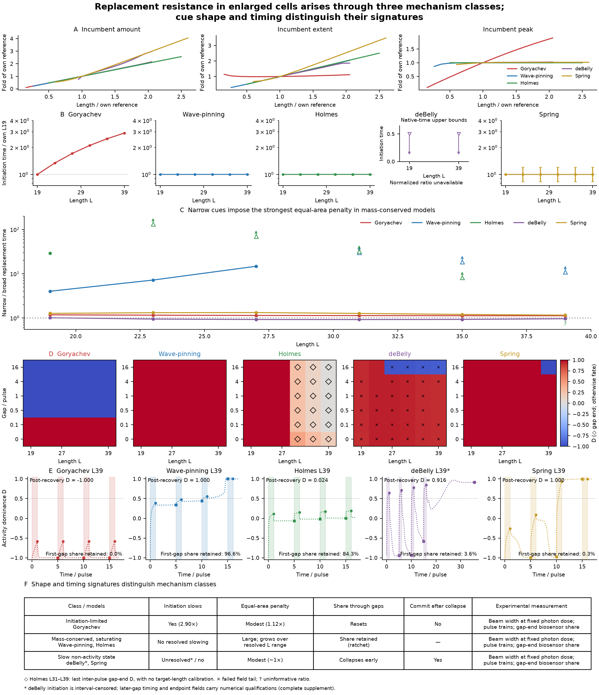
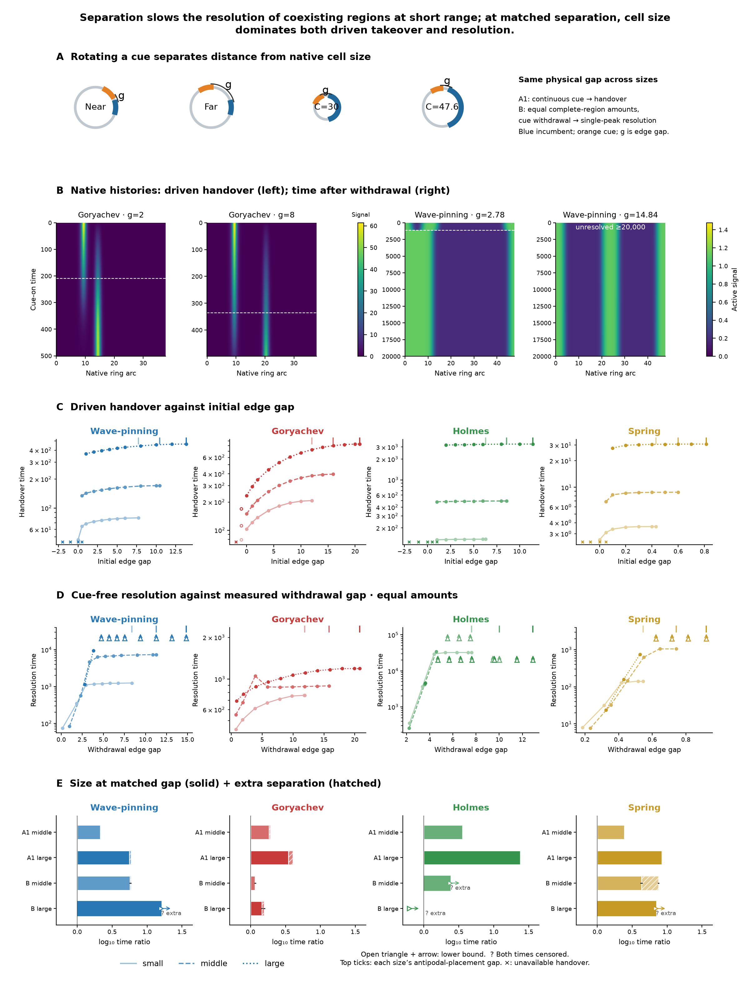
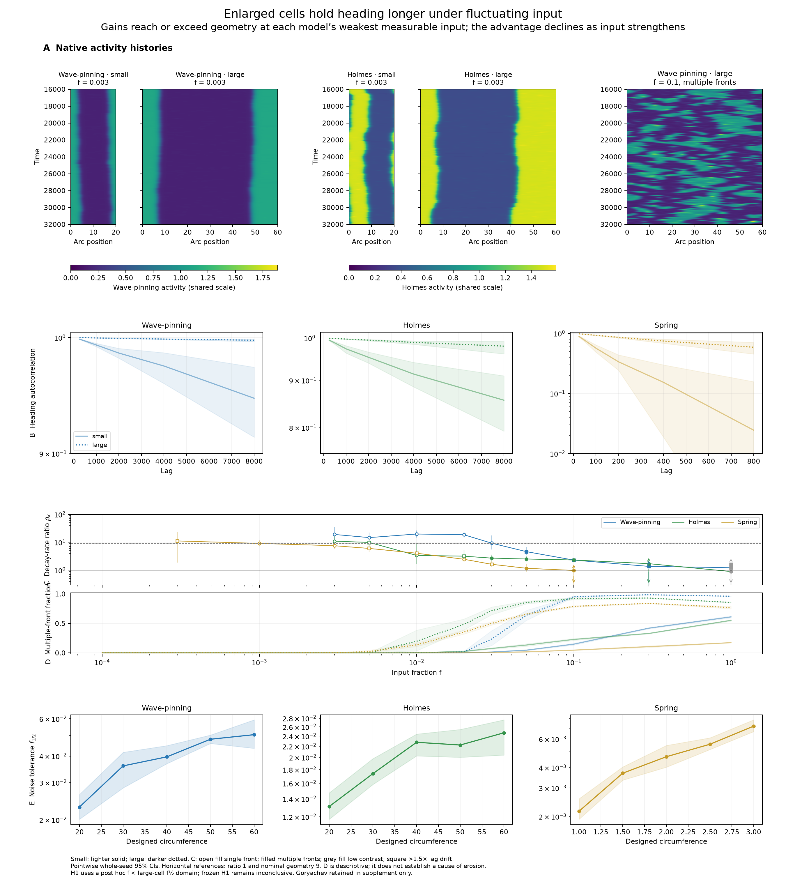

Generated 2026-10-22T13:49:34.714420+00:00. Simulation producers and figure generation complete.
Integrated outline_v5 · Three main plates · Figures with legends
Enlarged cells resist imposed replacement through distinct initiation, spatial and temporal response signatures (Figure 2). Distance between competing regions matters only at short range; enlarged cells resist replacement and resolve coexistence slowly mainly because of size itself (Figure 3). Spring's middle size is the supported exception in which extra accessible separation adds a substantial resolution-time contribution. Enlarged cells hold heading longer under fluctuating input — at or above the geometric expectation at weak input — and the advantage declines as input strengthens. (Figure 4). Geometry and multiple-front fractions are descriptive: erosion below the single-front geometric expectation can also occur while a single front persists. Observed migration summaries, conditional OU velocity-memory estimates and simulated polarity-heading readouts remain separate evidence.
Main PDF · Complete supplement · Changes, plotted values and qualifications

Enlarged cells resist replacement through distinct initiation, cue-width and gap-retention signatures, supporting three mechanism classes in the deterministic cue assays.
Main PDF · Complete supplement · Changes, plotted values and qualifications

Separation slows the resolution of coexisting regions at short range; at matched separation, cell size dominates both driven takeover and resolution. Times and gaps use native units.
Main PDF · Complete supplement · Changes, plotted values and qualifications

Enlarged cells hold heading longer under fluctuating input — at or above the geometric expectation at weak input — and the advantage declines as input strengthens. The geometric statement describes model-specific weakest measurable point estimates: f = 0.003 for Wave-pinning and Holmes, and f = 0.0003–0.001 for Spring. Confidence intervals also admit sub-geometric gains in Holmes and Spring. At the shared displayed input f = 0.003, Spring is already below its actual geometric expectation (rate ratio 7.55 versus geometry 8.55), while its large-cell regime is still classified as single front. (A) Native activity kymographs for small and large Wave-pinning and Holmes at f = 0.003, plus a large Wave-pinning example at f = 0.1; width is proportional to circumference, with shared activity scales within each model. (B) Heading autocorrelation at f = 0.003 on model-specific logarithmic ordinates with whole-seed 95% bootstrap bands; intervals extending below zero continue beyond the positive plotting range. (C) Small/large rotational decay-rate ratio at the shortest usable lag satisfying the frozen lag rule, with pointwise 95% CIs. Reference lines show unity and nominal single-front geometry (9); actual-circumference normalization is reported in the supplement. Marker fill describes the large-cell regime; squares flag non-exponential lag dependence. (D) Multiple-front fractions with bootstrap intervals, reported descriptively: Holmes and Spring can fall below geometry while still single-front, so these data do not establish multiple fronts as the cause of erosion. (E) Fixed-reference-lag noise tolerance increases with size; smallest/largest CIs separate in all three shown models. Small cells are lighter solid, large cells darker dotted. Native units are used. Post hoc H1 amendment: evaluate gains and supported reversals only at inputs strictly below the point estimate of the largest cell’s own f½; strict CI and size noise-tolerance rules are unchanged. Both main-view observation arms pass the amended H1 overall, while frozen rate H1 is inconclusive in both; all calls appear alongside in S0. H2/H3/A6 τ gates are retired. Goryachev is excluded from the main because its ratios derive from forced or non-exponential conditions, and remains complete in the supplement. Simulated polarity heading is distinct from migration persistence and conditional OU estimates.